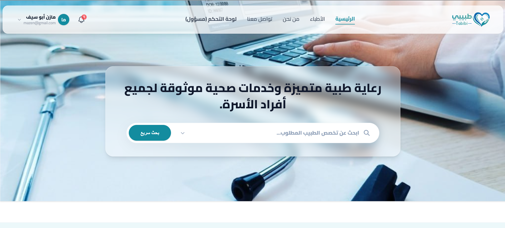
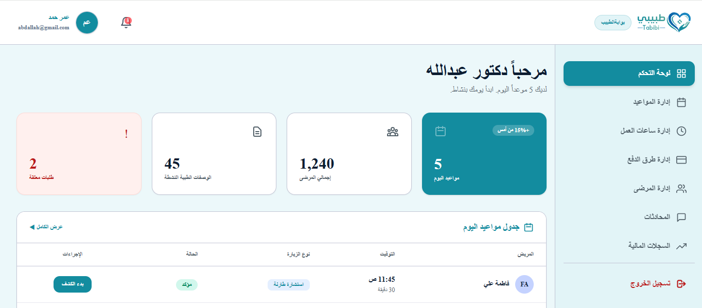
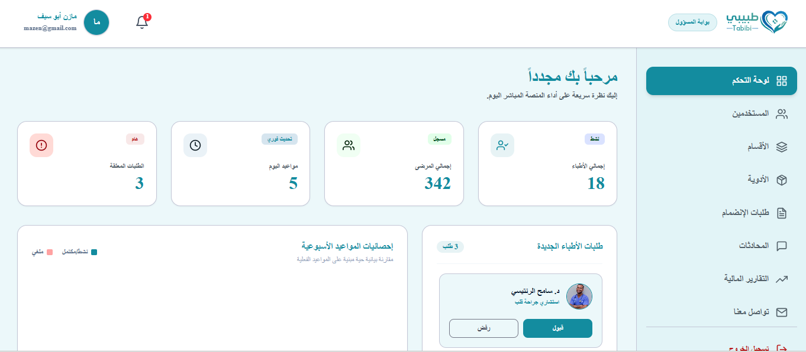
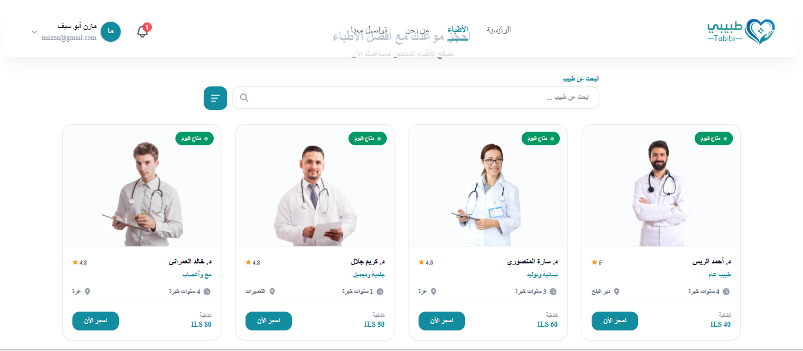
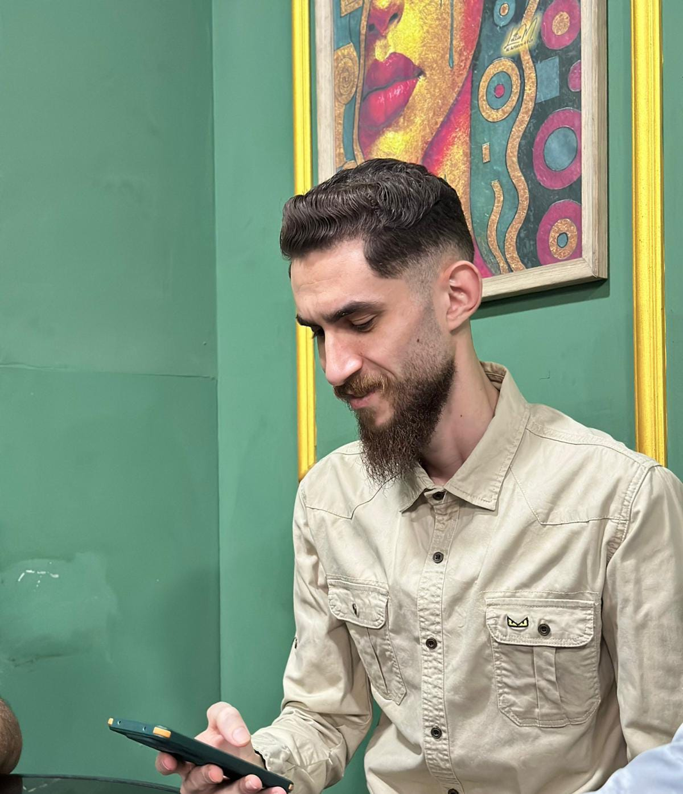

Tabibi
منصة رقمية متكاملة تساعد العيادات الخاصة على إدارة المواعيد والسجلات والوصفات في مكان واحد.
الفوضى الخفية داخل كل عيادة
الطبيب يقضي وقته في الأوراق، لا في مرضاه.
تُهدر يومياً لإدخال البيانات بدلاً من مراجعة المرضى
من المواعيد تُهدر أو تُلغى بسبب الإدارة اليدوية الفوضوية
من العيادات لا تزال تعتمد على السجلات الورقية
منصة تحوّل الفوضى إلى نظام رقمي
لإدارة العيادات الصغيرة تحوّل المواعيد والسجلات والوصفات إلى نظام رقمي منظم.
رقمنة عمليات العيادة
استبدال العمليات اليدوية بنظام رقمي موحد للمواعيد والسجلات والوصفات.
تمكين الطبيب
لوحة تحكم واضحة لإدارة الجدول اليومي وملفات المرضى وسجل الوصفات.
تحسين تجربة المريض
تطبيق موبايل بسيط لحجز المواعيد والوصول للوصفات في أي وقت.
ضمان سلامة البيانات
تخزين وإدارة آمنة للبيانات الطبية الحساسة.
تفعيل الاستشارات الطبية
تقديم استفسارات طبية والحصول على رد الطبيب دون زيارة.
تذكير بالمواعيد
عند حجز المريض للموعد، ترسل له المنصة إشعاراً بالموعد.
التقنيات المستخدمة وسير العمل
كيف يعمل طبيبي؟
موقع ويب احترافي وتطبيق موبايل يوفران تجربة سلسة لإدارة العيادات الصغيرة.
تطبيق المريض
- حجز الموعد واختيار الوقت المناسب
- إشعار فوري بتأكيد أو تعديل الموعد
- عرض السجل الطبي ووصفاته الكاملة
- إرسال استشارة والرد من الطبيب
- متابعة حالة الدفع والفواتير
لوحة تحكم الطبيب
- جدول المواعيد اليومي وقائمة الانتظار
- الملف الطبي الكامل لكل مريض
- إدارة المدفوعات والفواتير
- استشارات داخلية مع المرضى
منصة الويب (React & .NET)
واجهة ويب حديثة ومتكاملة تعرض تجربة المستخدم والوظائف الأساسية للمنصة بوضوح




تطبيق طبيبي
تطبيق الموبايل يقدم تجربة حجز واستشارات ووصفات سهلة وسريعة بين المريض والطبيب.


سوق مثمر ونقطة دخولنا مثالية
السوق الكلي
السوق المتاح
هدفنا الواقعي
هدفنا الواقعي مبدئياً: 10 عيادات × 10$/شهر — إجمالي تقريبي بعد 3 سنوات ≈ $3,600.
لماذا طبيبي؟
مع طبيبي
- سجلات رقمية آمنة ومنظمة
- جدولة ذكية بلا تعارض مواعيد
- تطبيق مريض سهل الاستخدام
- تاريخ طبي كامل بنقرة واحدة
- لوحة تحكم مالية شاملة
- واجهات سهلة الاستخدام
بدون طبيبي
- سجلات ورقية — ضياع بيانات المرضى
- تعارض مواعيد متكررة
- صعوبة وصول المريض للطبيب المناسب
- صعوبة مراجعة التاريخ الطبي
- صعوبة مراجعة السجل الطبي
كيف نصل إلى 150 عيادة في 3 سنوات؟
دخول تدريجي مبني على الثقة والنتائج القابلة للقياس.
أثبت القيمة — 5 إلى 10 عيادات
تشغيل تجريبي مع عيادات حقيقية وقياس رضا المستخدمين وتحسين المنتج.
انطلق بقوة — 25 عيادة
حملة رقمية وشراكات مع جمعيات الأطباء والمراكز الطبية.
تمدد إقليمياً — 50 عيادة
التوسع لجميع مناطق قطاع غزة وإطلاق خطة ترويج عامة.
القيادة الإقليمية — 150 عيادة
صيدليات + مختبرات + تطبيب عن بُعد.
من MVP إلى نسخة قابلة للنشر التجاري
شراكات دفع إلكترونيدمج بوابات دفع حقيقية مثل Stripe.
ربط الوصفة بالصيدليةإرسال الوصفة الرقمية مباشرة لصيدلية شريكة.
نتائج المختبررفع وعرض نتائج التحاليل المخبرية مربوطة بملف المريض.
تفعيل المحادثاتبين الطبيب والمريض، والطبيب والأدمن.
تذكيرات SMSضمان وصول تذكير الموعد لكل المرضى، وتقليل نسبة الغياب.
إضافة الصيدليات والمختبراتتوسيع المنصة لتشمل شركاء جدد.
طبيبي: من سجلات ورقية إلى رعاية صحية رقمية منظمة.
Tabibi Project Team



أسئلة الجمهور
نرحّب بأسئلتكم وملاحظاتكم — دعونا نناقش كيف يمكن لـ"طبيبي" أن يخدم عيادتكم.